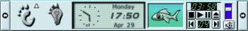
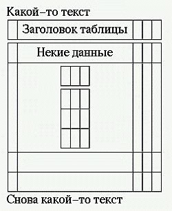
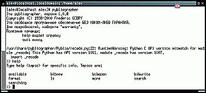
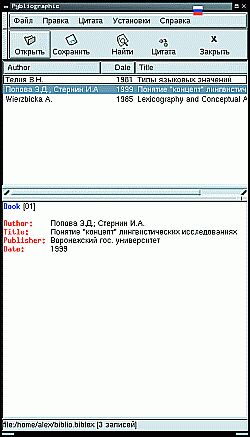
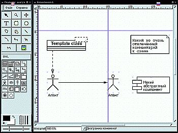
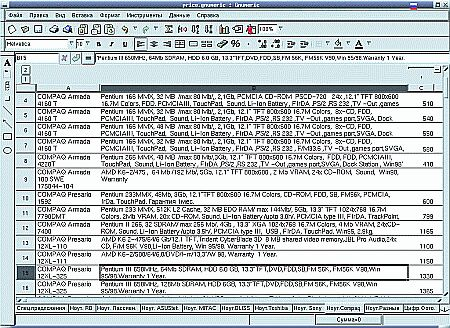
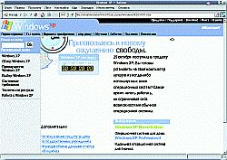
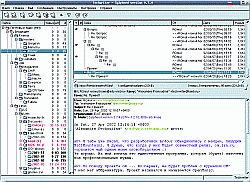
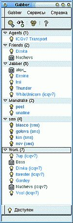
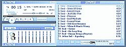

Девять с половиной пингвинов. Этюд о легкости работы в Linux
Александр Прокудин, 09/2002, Компьютер Price
Давненько
я не баловал читателей "Терабайта" своими зауминками, посему
исправляюсь и черпаю своей большой ложкой побольше лапши. Приготовьте
ваши нежные ушки, дамы и господа! Сегодня день итальянской кухни.
 Получив
от редактора список тем для написания статей, я даже обрадовался -
нарисовалась возможность узнать, что на самом деле интересует моего
дорогого работодателя. Признаюсь, увидев среди всего многообразия тему
с формулировкой "Как легко работать в Linux", я в первый момент слегка
ошалел, негромко кашлянул, встряхнул головой и снова кашлянул. Таким
образом, ритуал принятия на себя темы свершился.
В первый момент возникло желание выйти обратно
в текстовый режим, загрузить GNOME, наделать кучу красивых скриншотов
(не удержался-таки, см. рис. 1 - панель GNOME может быть разного
размера и содержать полнофункциональные программы, некое подобие чего
ожидается только в Windows Langhorn), написать саму статью в Writer из
офисного пакета OpenOffice.org (тут как раз сборка 641D от
дружественных мне ALTLinux подоспела), оформить ее покрасивше, тут же
снять скриншот и положить его в общий пакет с картинками,
предварительно проставив в статье на него индекс. Иными словами, меня
одолевал соблазн замкнуть статью на дизайне графических оболочек Linux.
Однако взгляд пал на стену, где у меня в ножнах висит старая верная
бритва Оккама. Это напомнило мне о том, что если уж писать, то о GNOME
2, а на момент обдумывания статьи финальная версия еще не вышла, к тому
же замыкание на графику, как говаривал один прапорщик, может быть
"чревато боком". В общем, нынешняя статья пойдет в несколько ином ключе
- без особо жутких графических выкрутасов, просто и лицом к
пользователю.
Давайте-ка определимся с тем, что есть
"легко". Господин Ожегов поведал, что "легкий - исполняемый,
достигаемый, преодолеваемый без большого труда, усилий". Оп-па,
приехали, милейший - скажете мне вы, имея в виду многочисленные байки о
"страшном люниксе, который не для людей сделан". Слышал я эти байки,
даже читал, притом в больших количествах. Разработчики BlackCat Linux в
свое время залудили эпохальную статью "10 мифов о Линуксе" и сиквел
"Еще 10 мифов о Линуксе". Пересказывать их смысла не имеет, тем более
что состояли они, в основном, из скриншотов, которые говорили сами за
себя.
Ну а теперь вспомним о том, что такое легкость
работы с ОС. Многие пользователи считают, что это когда они водят мышой
по коврику, а "оно само все делает". Насколько это справедливо? Давайте
посмотрим, как с этим обстоит в Linux, на примере, скажем, набора
текстов.
 Кто
из вас, о многотерпеливые мои, не согласится с тем, что в идеале
пользователь просто набирает текст, а программа сама производит
подобающее ему [тексту] оформление? Что-то я не помню такого ни в одном
из текстовых процессоров для Windows. Любой, кто набирал текст хотя бы
уровня реферата на 20 страниц, сталкивался с необходимостью ручной
разметки текста, подгоняя размер шрифтов при оформлении титульного
листа. Далее часто следует вырисовывание содержания текста вручную.
Более продвинутые пользователи знают о существовании указателей, что
сберегает им некоторое количество нервов - тогда, когда Word не глючит
и произвольно не сбивает идущий далее текст на страницу вниз. О
существовании такого элемента разметки текста, как разрыв строки,
абзаца и страницы, знают, по сути дела, вообще единицы. А ведь все, что
надо, - это ассоциировать названия глав со стилем Заголовок 2, название
реферата - со стилем Заголовок 1, после титульного листа вставить
указатель, а между титульным листом, содержанием (указателем) и главами
понавтыкать разрывов страниц. Но и тут проблемка вырисовывается.
А как бы нам сделать указатель имеющихся в
тексте таблиц, рисунков? А библиографию автоматом в хвост документа
вставить? А предметный указатель? А ведь при написании научных работ
такие вещи просто необходимы. Вот и оказывается, что любимый народом
Word - просто красивая игрушка для серьезных целей. Кстати, любовь эта
- та еще, трагедию "Отелло" напоминает.
Раcскажу байку из собственной жизни. Присылают
мне как-то на срочный перевод небольшой исторический документ, страниц
на 15, в формате Word2000. Открываю его в этом самом Word2000 и начинаю
работу. Все бы ничего, да вот документ был килобайт в 600, ибо содержал
картинки. А на жестком диске тем временем места свободного было
мегабайт 50. У Word есть одна мерзкая привычка, - когда вы при работе с
документом жмете на Ctrl+S, то все, что у вас было к моменту нажатия,
отправляется в новый временный файл, а вы продолжаете работу с
оригиналом. Делается это для того, чтобы можно было наотменять кучу
внесенных изменений. Соответственно, чем чаще вы сохраняете
редактируемый/набираемый текст, тем сильнее жесткий диск забивается
временными файлами. В общем, на 14 странице вылетает у меня красивое
такое сообщение, что сохранить копию невозможно, ибо места на диске
нету. У меня к тому времени лежало на жестком диске много нечитанной
информации, которую некуда было скинуть, поэтому я, недолго думая,
затер самые первые временные копии документа, наделанные Word`ом, и
попытался сохранить документ (много раз раньше так делал - и ничего,
все работало). Не буду далее утомлять вас подробностями моей войны с
Word. В результате я потерял и временные файлы, и оригинал перевода.
Это был последний день MS Office на моем компьютере. Работодатель до
сих пор уверен, что я выполнил перевод в Word2000, поскольку вся
разметка была точно сохранена (а это было обязательным условием
выполнения работы). Но перевод был сделан в OpenOffice.org Writer, да
еще и в Linux.
Возвращаемся к теме. Когда знакомые спрашивают
меня, можно ли в Linux так же просто набирать и оформлять тексты, как в
MS Word, я отвечаю - нет проблем, если вы действительно умеете работать
с текстами. Народ, только что пересевший на Linux, инстинктивно тянется
к вордоподобным текстовым процессорам - Abiword, Writer. Да и вообще,
те, кто хочет большей надежности в работе, те, кому надоело
подсаживаться на форматную иглу Microsoft и других производителей
проприетарного софта (дальше по тексту я еще вспомню ICQ), - остаются.
Те, кто поставил Linux для баловства, - уходят. Эта операционка не
терпит бездумной работы. Однако я все время отвлекаюсь от главной темы
этой части. А главная тема этой части статьи - короткий рассказ о LyX.
Если просто, то этот текстовый процессор очаровывал меня по мере знакомства с ним все больше и больше. Коротко о главном:
1. Он умеет при помощи ghostscript печатать
текст сразу в PDF, причем, сделав это один раз, можно спокойно
распечатывать PDF на любом компьютере, - проблем с полями и шрифтами не
будет.
2. Он умеет вставлять в текст указатели всех возможных типов, перекрестные ссылки, метки, сноски, примечания на полях.
 3. Он может хранить таблицу в таблице. Непонятно? См. рис 2.
4. Он умеет вашими руками вставлять в документ формулы любой сложности.
5. Он сам расставляет русские/английские/немецкие/любые другие переносы при печати на принтер или в файл.
6. Он умеет еще много чего, но самое главное -
вы можете редактировать созданный документ в любом текстовом редакторе,
потому что LyX - это WYSIWYG для упрощенного варианта языка TeX - LaTeX.
 Иными
словами, ценой установки пакетов tetex и tetex-latex (что-то около 50
дополнительных Мб на винчестере) вы получаете возможность забыть о
глюках программы (LyX удивительно стабилен), требованиях к железу (при
шести открытых документах общим весом в полтора мегабайт используемая
память - 6688 Кб). Выглядит процессор не так задиристо, как тот же
Word, но ...
1. Разработчики сейчас занимаются переработкой
кода LyX, что позволит легко создавать полный аналог LyX на графических
виджетах Gtk+ и Qt, и тогда на бедноту дизайна жаловаться будет грех. К
концу года ожидается этот принципиально новый релиз.
2. А оно очень надо - внешне повторять не слишком эргономичный Word?
Есть еще кое-что, что мне очень нравится в LyX
- его способность быть интегрируемым. Объясняю на конкретном примере.
Те, кто профессионально работает с библиографическими базами данных,
знакомы с форматом BiBTeX - диалектом TeX для библиографов. Такие базы
данных поддерживаются в Linux при помощи ряда программ, среди которых
большой интерес представляет Pybliographic, имеющая как консольный
(текстовый) клиент (идеально подходит для старых машинок - см. рис. 3),
так и симпатичный графический клиент на виджетах Gtk+ (см. рис. 4).
Особенность последнего в том, что он умеет взаимодействовать с LyX, а
именно - вставлять из библиографической базы ссылку в текст документа
LyX. В принципе, это же можно делать и средствами LyX, но не так удобно.
Коротко о рисунках, графиках и блок-схемах в
LyX. Поскольку LyX задумывался как текстовый процессор для ученых, то
поддержки растровой графики в полном объеме нет, однако можно легко
вставить изображение в формате векторной графики EPS. Что касается
графиков, то их можно легко построить в любой из предназначенных для
этого программ (например, gnuplot или kmatplot), сохранить в EPS и
вставить как рисунок. То же касается и блок-схем, которые можно
рисовать, например, в Dia (рис 5.).
 Что
ж, о текстах поговорили. Электронные таблицы? Ну, даже неудобно как-то
об этом говорить... Все давно есть. Лично мне очень нравится Gnumeric
(см. рис. 6.). Это достаточно легкая программа для работы с
электронными таблицами. Единственным ее недостатком, пожалуй, является
отсутствие возможности полного скриптования. А вот и плюсы - хорошая
поддержка форматов Excel и Lotus 1-2-3, возможность импорта данных из
DBF, построение диаграмм при помощи отдельно разрабатываемой программы
Guppi. Последняя, кстати, может скриптоваться на языках Python и Lisp.
Кроме того, в Gnumeric архитектурно заложена возможность встраивать в
документы OLE-объекты. Частично эта возможность уже реализована. К
осени планируется доработать все составляющие GNOME Office в
направлении интеграции. Одного моего знакомого Gnumeric поразила тем,
что в нее заложена возможность писать собственные функции на Python, -
все прозрачно. В программу также заложены достаточно мощные средства
статистического анализа. Формат файлов Gnumeric основан на XML, что
тоже шаг вперед. Да, чуть не забыл, - любимая народная забава -
разглядывание прайсов из Инета, раздаваемых там в формате Excel,
проходит в Gnumeric на ура (см. все тот же рис. 6). В общем, три
четверти всех потребностей программа покрывает. Легко? Легко. Удобно?
Удобно. Красиво? Еще как, черт побери! Кому нужен тотальный контроль
над таблицами - смотрите в сторону OpenOffice.org Calc.
Так, чувствую, что все же ускользаю в сторону
описания своего рабочего места. Но ведь мне легко и приятно работать в
Linux ... Тогда продолжаем разговор.
Следующий пункт, по идее, - Интернет и
электронная почта. Я бы, конечно, мог закидать вас скринами очень
навороченных почтовых клиентов в Linux. Чего стоит один Evolution,
который и почтовый клиент, и планировщик, и календарь, да еще и прогноз
погоды в вашем городе показывает... А еще я мог бы рассказать о том,
какой красивый и удобный браузер - Galeon (рис. 7). Galeon вызывает у
меня вообще чувство сплошного восхищения. Разработчики за каких-то два
года сделали браузер, который по удобству использования и внешнему виду
оставляет всех прочих ну просто очень далеко позади. Начиная с версии
1.1 поддерживается функция mouse gestures, вероятно, знакомая вам по
браузеру Opera. Однако мне он интересен не тем. Интересен он тем, что,
как и его папа - Mozilla, - дает полный контроль над отображаемым
контентом. Вы можете решать, какие cookies принимать, а какие - нет. Вы
можете включить автоматическое отпинывание cookies, загружаемых не с
оригинальных серверов, что благополучно отражается на безопасности (при
желании прием "плюшек" можно вообще отменить). Точно так же можно
поступать и с рисунками. Притом, отключив загрузку изображений с
"третьих" серверов, вы автоматически избавляете себя от немалой части
баннеров. Впрочем, для этого есть более интеллектуальное средство под
названием squid. Squid реагирует на определенные баннерные ссылки вроде
linkexchange и отключает загрузку таких рисунков, причем срабатывает
это с любым графическим браузером, поскольку Squid работает с
изначальным входящим потоком. Я пробовал разные графические
баннерорезки для Windows, но все они просто отдыхают в сравнении со
squid. Ведь в чем прелесть, - тем нужен постоянный уход, они занимают
определенное пространство на экране и отвлекают внимание. А squid вы
настраиваете один раз, и потом о нем можно забыть - он просто работает,
экономя траффик, а значит, и деньги.
Назад, к почте. Из всего многообразия почтовых
клиентов я выбрал Sylpheed (см. рис. 8). Да, он не полностью отображает
HTML, но содержащиеся в письмах ссылки можно комбинацией Ctrl+щелчок
мышью открывать в Галеоне, а большего мне и не надо. Если кому-то очень
нужна полная поддержка HTML в почте, мой ответ - Kmail, Mozilla Mail,
Evolution. Кстати, один мой знакомый, заядлый пользователь TheBat!,
утверждает, что в Mozilla Mail самый удобный из виденных им инструмент
для создания фильтров. И опять же, при желании вы можете использовать
консольный почтовый клиент - mutt, который удивительно шустро
обрабатывает почту, поддерживает немыслимое количество кодировок и
вообще прекрасно работает хоть на "четверках", при том, что мне
известны случаи повседневного использования mutt на компьютерах и с
третьим Intel и с Athlon MP. Значит, дело не в "железе"? Если не
нравятся встроенные в клиент средства фильтрации входящего/исходящего
потоков, всегда есть почтовый сервис procmail, который практически не
знает ограничений по фильтрации, ибо использует язык регулярных
выражений (а для эффективной работы в Linux его все равно нужно знать,
да он и несложный совсем - чистая логика, это я как конченный
гуманитарий заявляю).
Пару слов о мессенджерах в Linux. Клиентов для
ICQ и AIM в Linux сейчас развелось столько, что знакомые пользователи
Windows просто диву даются. Клиенты под протоколы MSN и Yahoo тоже
есть, но это все проприетарная публика. Дамы и господа, не пора ли
наконец осознать простую вещь - соглашаясь использовать формат, который
поддерживается только одной компанией, вы автоматически становитесь
зависимыми от этой компании. Невероятное количество пользователей
сейчас подсело на MS Office и теперь вынуждено обновлять ПО только
потому, что более состоятельные деловые партнеры обновили у себя версию
MS Office. О том, каким болезненным был переход со старого протокола
ICQ на новый, не мне вам рассказывать - еще живы воспоминания. Есть ли
альтернатива? Есть - это открытый протокол Jabber. У него внутри полный
юникод, поэтому писать можно сразу на всех доступных языках - вас
прекрасно поймут, даже если собеседник использует другой протокол для
общения. К примеру, мой шеф уже года два пользуется Mirabilis ICQ и
пока не хочет с нее слезать. Я пользуюсь Jabber-клиентом для Linux -
Gabber (он, кстати, и для MacOS есть) - он на рис.9 . Я не настраивал
отображение кодировок, но мой шеф прекрасно читает мои сообщения, а я -
его. Факт остается фактом.
 И еще о безопасности, теперь отдельным текстом.
Firewalls. Существует такой межсетевой экран -
iptables. Его можно настроить при помощи прямой правки
конфигурационного файла, а можно - установив одну из многих графических
конфигурилок. После этого можно, опять же, забыть о том, что он вообще
существует, и просто периодически поглядывать на лог и дивиться тому,
сколько глупого народу к вам ломится и получает отлуп по полной
программе.
Шифрование почты. Все существующие почтовые
клиенты поддерживают шифрование при помощи PGP. Sylpheed, например, без
этого модуля вообще не установится. В Mozilla Mail модуль шифрования
ставится отдельно.
Шифрование в мессенджерах. Если вы пользуетесь
ICQ или AIM, то все претензии по поводу шифрования предъявлять некому -
владелец обоих протоколов нынче активно борется с альтернативными
клиентами для своих протоколов. Зато протокол Jabber поддерживает
шифрование по SSL при передаче данных на сервер. Обычным пользователям
это, возможно, и неинтересно, а вот корпоративным пользователям это
просто необходимо.
А еще я с удовольствием смотрю на компьютере
кино в DivX ... и тоже в Linux. Дело в том, что в Windows кодек DivX
4.11 давал отвратительную рассинхронизацию, доходившую до 15 секунд. А
в Linux я использую проигрыватель Xine (рис.10 + xine-ui.tif), который
поставляется со своим кодеком DivX. В результате я могу смотреть
полноэкранное видео практически без рассинхронизации (за полчаса
набегает секунда, но это лечится последовательным нажатием кнопок
пауза/воспроизведение). А ведь у меня 200MMX и 64 RAM. Качество
картинки великолепное. Легко? Легко. Удобно? Удобно.
Что до музыки, то в моем распоряжении и XMMS
(рис. 11), воспроизводящий все и вся, поддерживающий к тому же скины от
Winamp, а также RealPlayer8. Право слово, вы не почувствуете никакой
разницы между Winamp и XMMS, да и между Windows- и Linux-версиями
RealPlayer тоже. К тому же, XMMS реально поддерживает юникод намного
раньше Winamp (а вас никогда не бесили криво отображенные в Winamp
французские названия исполнителей и песен?).
 А
теперь о главном. Много ли нужно настраивать? Давайте считать. Для
полноценной работы с LyX действительно нужно читать руководства. Но
английские руководства написаны очень понятно и с юмором, есть и
русские. В Gnumeric все интуитивно понятно, но чтение инструкции (пока
- только на английском) иногда требуется. Настройка браузера и
почтового клиента по сложности ничем не сложнее, чем в Windows, и не
требует особых познаний, хотя я все же советую почитать главу о
безопасности из справочной системы Mozilla - она, усилиями Валентины
Ванеевой из Сибкона, существует теперь и на русском языке. Для
шифрования почты весьма полезным окажется чтение о принципах работы PGP
- опять же, для вашей же пользы. Настройка мессенджера в Linux - это
привычное путешествие по нескольким диалоговым окошкам с указанием
обычных параметров. Видеоплееры работают сами по себе. С музыкой тоже
никаких проблем - напильник не требуется.
Неосвещенным остался еще один вопрос:
обновление программного обеспечения. Возможно, это прозвучит
самонадеянно, но здесь Windows очень конкретно отдыхает по простой
причине - через Windows Update доступно очень и очень немногое, а для
обновления сторонних программ средств автоматического обновления, как
правило, и вовсе нет. На этом фоне такие дистрибутивы Linux, как
Debian, ALTLinux'овские дистрибутивы и SUSE, выглядят более чем
выигрышно - разработчики этих дистрибутивов поддерживают репозитарии
пакетов. Репозитарий - это сборник большого числа пакетов программ,
который постоянно обновляется. При этом соблюдаются все зависимости
между пакетами. Автоматическое обновление программ из репозитария
осуществляется при помощи утилиты apt. Управлять ею можно либо из
консоли простым вводом очень несложных команд, либо при помощи
консольного или графического клиентов.
Вот пример установки офисного пакета Koffice для KDE из консоли:
[root@localhost /]# apt-get install koffice
 Обработка файловых зависимостей... Завершено
Чтение списков пакетов... Завершено
Построение дерева зависимостей... Завершено
Следующие НОВЫЕ пакеты будут установлены: koffice
0 пакетов будет обновлено, 1 будет добавлено новых, 0 будет удалено (заменено) и 171 не будет обновлено.
 Необходимо получить 7744 kB архивов. После распаковки 18,4 MБ будет использовано.
В том случае, если потребуется установить
дополнительные пакеты, вам будет сообщен общий объем скачиваемых
пакетов, и если это слишком много для вашей линии - вы сможете либо
отказаться, либо закачивать пакеты понемногу за раз, так как закачка
производится программой wget, поддерживающей докачку.
Основные команды apt - apt-get, apt-cache и apt-cdrom.
apt-get служит для установки и удаления программ, а также получения пакетов с исходниками.
apt-cache служит для поиска по репозитарию - вы можете формировать достаточно сложные запросы.
apt-cdrom служит для обновления программного
обеспечения с дисков. Я не оговорился - именно с дисков, потому что,
начиная с осени 2001 года, обновления репозитария пакетов Sisyphus,
поддерживаемого русской фирмой ALTLinux, доступны на компактах. Для
этого достаточно оплатить подписку в он-лайновом магазине www.linux-online.ru.
Приблизительно раз в два месяца вам будет приходит несколько дисков, на
которых будут обновления. Каждый комплект стоит 100 рублей. То есть,
достаточно один раз купить дистрибутив, а затем подписаться на
обновления.
Главное
удобство apt в том, что эта утилита сама разбирается со всеми
системными зависимостями, поэтому многие пользователи, имеющие "толстый
канал", просто настраивают системный планировщик Linux - cron - на
ежедневное обновление (например, при старте системы). Есть ли такое в
Windows? В зачаточном состоянии. А в Linux это работает уже сейчас, и
работает, замечу, превосходно.
Ну что, давайте подводить итоги.
Опыт говорит, что для эффективной работы в
Linux без чтения документации не обойтись. Но без чтения документации
вы не уедете далеко в любой ОС.
Опыт говорит, что Linux - более гибкая ОС в
сравнении с Windows. Но для того, чтобы использовать заложенные в нее
ресурсы, нужно читать документацию.
Опыт говорит, что при использовании
графических оболочек GNOME и KDE вопросов возникает меньше, чем при
использовании IceWM или BlackBox. Но это никак не отражается на
гибкости операционной системы. Просто в первом случае вы получаете
больше рюшечек, присутствие которых просто украшает рабочее место и
делает его более привычным пользователю Windows, но отсутствие этих
рюшечек никак особо не влияет на производительность, зато экономит
системные ресурсы.
 Опыт
показывает, что при работе в Windows с необходимостью автоматизации
ряда операций вероятность упереться лбом в ограничения из-за закрытости
кода гораздо выше - в Linux работа может автоматизироваться как на
уровне системы, так и на уровне отдельных приложений, в Windows -
только на уровне отдельных приложений, притом очень немногих.
Опыт показывает, что обновление программного
обеспечения через сеть или с диска при помощи apt проще и безопаснее,
чем ползание по сети в поисках нужной программы или выяснение наличия
обновлений отдельных приложений.
Опыт показывает, что при возникновении
вопросов пользователь Linux всегда может воспользоваться списками
рассылки, где более опытные пользователи, а часто - и сами
разработчики, в абсолютном большинстве случаев, очень быстро либо
подскажут решение, либо направят на конкретный файл документации для
изучения, в то время как пользователю Windows приходится либо ждать
ответа от службы техподдержки Microsoft (часто - путанного и
шаблонно-неинформативного), либо запостить сообщение на форуме и ждать
ответа, часто - непотребно долго. Очень быстрое получение ответа через
рассылку - это не так уж и относительно. Я получал очень конкретные
ответы на свои вопросы не позже чем через 24 часа после задания
вопросов. Несколько раз (конечно, в дневное время) такие ответы
приходили и через несколько минут.
Отсюда вывод: Linux - это свобода выбора и
независимость, которая требует наличия у пользователя желания думать.
Не нравится - никто не настаивает; всегда есть Windows, где вы ничего
толком не контролируете, зато и книжки читать особо не надо. А о
Большом Брате пусть в "желтой прессе" пишут.
На этом прощаюсь.
|